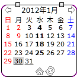
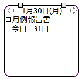
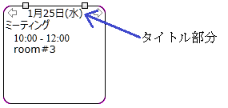
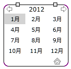
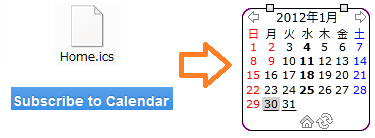
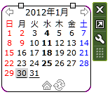
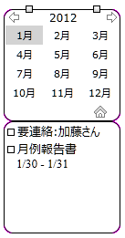

iCalビューア２について
更新：2012/04/14

iCalビューワー２とは、iCalendar形式(拡張子ics)のファイルを元に、
スケジュールをカレンダーに表示するためのサイドバー・
ガジェットです。
iCalendar形式は、スケジュールを管理するアプリ(例えばgoogleカレンダーや
Lightningなど)やスポーツの試合予定などのイベントを通知する場合などに
使われています。
こういったスケジュールなどの情報を、アプリを立ち上げなくても
気軽に確認することができると便利かと思いこのガジェットを作ってみました。
以前に、同じコンセプトのガジェット iCalビューアを公開していたのですが、
今回silverlightを使って一から作り直したので、iCalビューア２としました。
以前のバージョンに比べると、iCalファイルのサイズが大きい場合には
処理が速くなっていると思いますが、メモリーは以前より
使ってしまうので、環境によっては重くなるかもしれません。
主な機能
- ローカルまたはインターネット上のiCalファイルについて、
予定(VEvent)とタスク(VTODO)の基本的な内容を表示
(タスクについては未処理のもののみ表示されます)
- インターネット上ではhttp,webcal,caldavプロトコルのサポート
- インターネット上ではログインが必要な場合にも対応
(ベーシック認証、ダイジェスト認証)
- 祝日用および予定・イベント用の二種類のiCalファイル
- 画面表示の一部カスタマイズ
セットアップ
現状ではWindows7でのみ動作確認をしています。
iCal2.gadgetファイルをダウンロードし、ダブルクリックすると
自動的にインストールされます。
もしこんな表示がされた場合は、silverlight5のランタイムが
インストールされていません。
表示されている画像をクリックすると自動でインストールされますので、
その後このガジェットを終了させてから、もう一度起動してください。
このガジェットでは、インターネットからiCalファイルを取得するときに
.Net Framework 4を使っています。
インターネットからiCalファイルの取得に失敗する場合は、
.Net Framework 4 Client Profileのランタイム
をインストールしてください。
(通常は、Windowsアップデートで自動インストールされているはずです)
操作方法
スケジュールの表示は月ごとになっています。
デフォルトでは、今日は背景がグレイで、
予定のある日は太字で表示されます。
期限または開始の時間が指定されている未処理のタスク(todo)は
下線で表示されます。
予定またはタスクのある日をクリックすると、その日の予定が表示されます。
□が付いているのがタスク(todo)です。


月表示に戻すには、タイトル部分（日付が表示されているところ）をクリックします。
さらに、月表示のときにタイトル部分をクリックすると、年表示になります。

年表示では表示したい月を選択できます。
さらにタイトル部分をクリックすると１０年ごとの表示になります。

アイコンの説明:
前の月／次の月を表示します。
日ごとの表示の場合は前の日／次の日になり、
年表示では前の年／次の年となります。
今月の表示に戻ります。
iCalendarファイルを再読込みします。
iCalendarファイルは定期的にチェックされますが、
それまで待てないときに使います
通常は表示されません。画面の描画処理中を示します。
内部的にはiCalendarファイルからその月に該当する予定を調べています。
通常は表示されません。iCalendarファイルの読み込み中であることを示します。
iCalファイルのドラッグ＆ドロップ
ローカルのファイルや、ブラウザーで表示しているページのリンク
をドラッグして、このガジェットにドロップすると、
そのiCalendarファイルの内容が表示されます。

タスク(todo)一覧表示

iCalビューア２にマウスを乗せた状態で右の方に出てくる
まん中の□のようなボタンをクリックすると、
下にタスク(todo)の一覧が表示されます。

もう一度同じ操作をすると、タスク(todo)の一覧が非表示になります。
カレンダー上では、タスク(todo)の期限または開始時間が指定された
場合のみ表示されますが、ここでは期間に無関係にすべてのタスク(todo)
が表示されます。
ただし、未処理状態のものだけが表示されます。
処理済のタスク(todo)を表示する機能はありません。
設定
iCalビューアにマウスを乗せた状態で右の方に出てくる、
下のレンチのようなボタンをクリックすると設定画面が出てきます。
設定画面が表示されるのに、数秒かかることがあります。

「カレンダー」タブでは、予定を表示するためのiCalendarファイルと
祝日用のiCalendarファイルを設定できます。
ローカルのファイルは、参照ボタンからも選択できます。
インターネット上のファイルの場合は、http://....と設定してください。
プロトコルによって、httpの部分をwebcal, caldavに置き換えてください。
SSLアクセスの場合は、https,webcals,caldavsとなります。
インターネット上のファイルを取得するのに認証が必要な場合は、
ユーザーIDとパスワードを設定してください。
例としてgoogleカレンダーの場合には、ファイル名に
caldavs://www.google.com/calendar/dav/xyz@gmail.com/events/を、
ユーザーIDにxyz@gmail.comを、パスワードにgoogleアカウントの
パスワードを設定します。xyzはあなたのgmailアドレスと置き換えてください。
接続テストのボタンをクリックすると、
iCalendarファイルに正常にアクセスできるか調べることができます。
それぞれのiCalendarファイルに正常にアクセスできれば、OKと表示されます。
それ以外の場合は、エラー情報が表示されます。
クリアボタンは、接続テストの結果表示を消去します。

「表示」タブでは、日付の色や背景色などを設定できます。
通常の文字色は、今日と予定日以外の日の文字の色を選択できます。
ただし、土曜日(青)、日祝日（赤）の色は変更できません。
今日、予定日、タスク(Todo)の文字色も同様に選択できます。
文字の背景色も同様に選択できます。
太字・下線にする場合はそれぞれチェックしてください。

「その他」タブでは、以下の項目を設定できます。
カレンダーの自動読み込み間隔は、予定日用と祝日用の
iCalendarファイルを読み込む間隔を分単位で指定します。
ファイルの読み込み間隔に０を指定すると再読込みしません。
日付表示やタスク(todo)一覧で表示される予定・タスクをクリックした時に、
アプリケーションを起動したり、ブラウザーで特定のページを開くように
するための設定です。
アプリケーションのパスや、ブラウザーで表示するページのURL(http://...)
を指定してください。アプリケーションの場合で引数がある場合には、
引数欄に記述してください。URLの場合には無視されます。
コマンドと引数に$Y,$M,$D,$Uを指定すると、その予定やタスクの
年、月、日、UIDに変換された内容を元にコマンドを実行します。
年月日は、日付表示の場合はその日付、
タスク一覧の場合にはそのタスクの期限などから取得します。
UIDは、予定やタスクに設定されている固有のIDです。
月表示や日表示でのタイトルのフォーマットを設定できます。
設定方法の詳細は、
silverlightのカスタム日時書式を参照してください。
その他仕様など
タイムゾーンについて。
iCalビューアではiCalendarファイルのタイムゾーンをチェックし、
システムのタイムゾーンに変換して表示しています。
iCalendar形式では必ずタイムゾーンを定義しなければいけないのですが、
一部ではタイムゾーンを定義しないで使っている場合があるようです。
iCalビューアでは、一部のタイムゾーンについてだけ定義されていなくても
機能するようにしてあります。そのタイムゾーンとは以下のものです。
- Asia/Japan
- US/Central
- US/Eastern
- US/Mountain
- US/Pacific
これ以外だと、グリニッジ標準時間として判断するので、時間が正しく表示されないことがあります。
iCalendar形式はRFC5545で定義されています。
iCalビューア２ではこのうちVEVENTコンポーネントとVTODOコンポーネントの
基本的な内容を表示しています。
VJOURNALは無視しています。
繰り返しの指定についてもほぼ対応していると思います。
スクロール・バーについて
日表示などでたくさんの予定がある場合にはスクロール・バーが表示される
のですが、ドラッグでのスクロールが動作しません。
クリックでのスクロールは可能です。
インターネット上のiCalファイルへのアクセスについて、
iCalビューア２では同梱のWebLoader.exeという実行ファイルを使っています。
これを動かすのに、.Net Framework 4のランタイムが必要になります。
一般的にはjavascriptのXMLHttpRequestを使う方法を取ると思いますが、
私のテストした範囲ではiCalファイルのURLがリダイレクトされていると
うまく取得できないことがあったので、こうなりました。
謝辞
最後になりましたが、このガジェットはDOTS・DESIGNからたくさんのアイコンを使わせていただきました。
ありがとうございます。
リリース履歴
2012.4.14 v1.0.0 最初のリリース